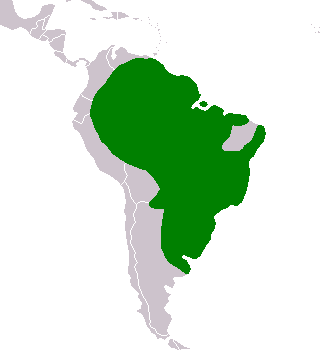

Kapybara on sosiaalinen laumaeläin. Vaikka kapybarat voivat joskus elellä yksin, useimmin niitä tavataan 10-20 eläimen ryhmissä, joissa on 2-4 aikuista urosta, 4-7 aikuista naarasta ja loput nuorempia yksilöitä. Kapybaralaumat voivat koostua jopa 50-100 yksilöstä kuivan kauden aikaan, kun eläimet kerääntyvät vesilähteiden lähettyville.
Kapybaroilla on kahdenlaisia hajurauhasia: morillo, joka on kuonon yläosassa, sekä anaalirauhaset.
Vesisiat parittelevat vedessä, ja naaraan kantoaika on viisi kuukautta. Poikaset ovat syntyessään varsin kehittyneitä ja alkavat jo ensimmäisen elinviikkonsa aikana syödä emon maidon ohella myös kiinteää ravintoa. Kapybara elää 5–10 vuotta.
Vaikka kapybarat ovat aika ketteriä maalla, ne ovat myös yhtä taitavia vedessä. Kapybarat ovat hyviä uimareita ja voivat pysyä veden alla jopa viisi minuuttia, esimerkiksi petoeläimiä vältelläkseen.
Vesisian pahin luonnollinen vihollinen on jaguaari. Vaaran uhatessa vesisiat pakenevat yleensä veteen.
